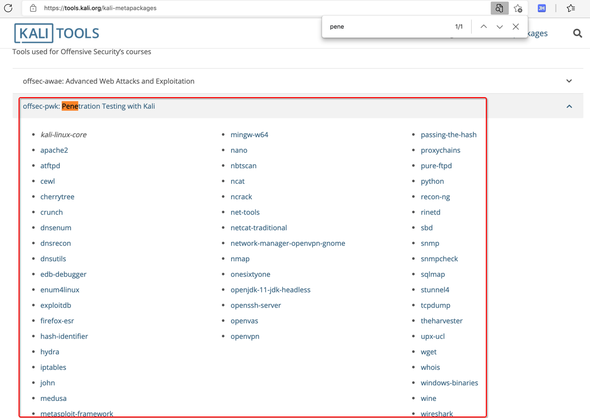
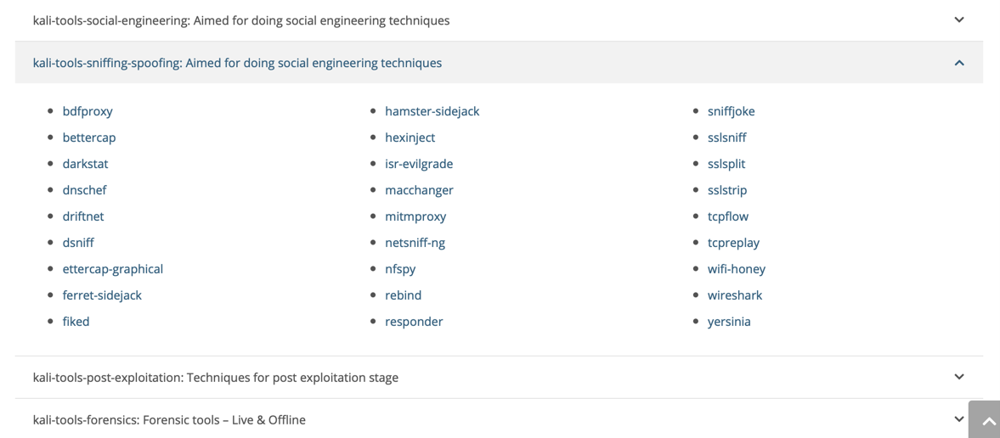

Kali Linux
- =
Kali Linux - 是什么：一个Linux操作系统，专门用于渗透测试，
Kali- =
Kali Linux- 旧称：
BackTrack Linux
- 旧称：
- 是什么：一个操作系统
- 用途：专门用于安全、逆向、破解、渗透
- 特点：自带大量相关工具
- 被称为
- 网络安全人员的专用系统
- 资料
- 主页
- Kali Linux | Penetration Testing and Ethical Hacking Linux Distribution
- 主页
- 其他方面对Kali的支持
- Hopper Disassembler
- Hopper - Download
- https://www.hopperapp.com/download.html?
- 专门提供Kali Linux的zip压缩包
- https://www.hopperapp.com/download.html?
- Hopper - Download
- Hopper Disassembler
- =
Kali中的工具
- Kali中的工具
- 首页
- Penetration Testing Tools - Kali Linux
- Kali Linux Tools Listing | Penetration Testing Tools
- 首页
根据用途分
- Kali Metapackages
- Kali Metapackages | Penetration Testing Tools
- https://tools.kali.org/kali-metapackages
- Metapackages 目的是方便你，根据自己的用途，安装特定领域的工具
- 可以根据自己的需要，去找对应领域或用途的工具
- Metapackages 目的是方便你，根据自己的用途，安装特定领域的工具
- https://tools.kali.org/kali-metapackages
- 举例
- 渗透测试 Penetration Test
- 
- 无线 Wireless
- 嗅探 Sniff
- 
- 模糊测试 Fuzz
- 渗透测试 Penetration Test
- Kali Metapackages | Penetration Testing Tools


根据不同类型分
- 根据不同分类
- Information Gathering
- ace-voip
- Amap
- APT2
- arp-scan
- Automater
- bing-ip2hosts
- braa
- CaseFile
- CDPSnarf
- cisco-torch
- copy-router-config
- DMitry
- dnmap
- dnsenum
- dnsmap
- DNSRecon
- dnstracer
- dnswalk
- DotDotPwn
- enum4linux
- enumIAX
- EyeWitness
- Faraday
- Fierce
- Firewalk
- fragroute
- fragrouter
- Ghost Phisher
- GoLismero
- goofile
- hping3
- ident-user-enum
- InSpy
- InTrace
- iSMTP
- lbd
- Maltego Teeth
- masscan
- Metagoofil
- Miranda
- nbtscan-unixwiz
- Nikto
- Nmap
- ntop
- OSRFramework
- p0f
- Parsero
- Recon-ng
- SET
- SMBMap
- smtp-user-enum
- snmp-check
- SPARTA
- sslcaudit
- SSLsplit
- sslstrip
- SSLyze
- Sublist3r
- THC-IPV6
- theHarvester
- TLSSLed
- twofi
- Unicornscan
- URLCrazy
- Wireshark
- WOL-E
- Xplico
- Vulnerability Analysis
- BBQSQL
- BED
- cisco-auditing-tool
- cisco-global-exploiter
- cisco-ocs
- cisco-torch
- copy-router-config
- Doona
- DotDotPwn
- HexorBase
- jSQL Injection
- Lynis
- Nmap
- ohrwurm
- openvas
- Oscanner
- Powerfuzzer
- sfuzz
- SidGuesser
- SIPArmyKnife
- sqlmap
- Sqlninja
- sqlsus
- THC-IPV6
- tnscmd10g
- unix-privesc-check
- Yersinia
- Exploitation Tools
- Armitage
- Backdoor Factory
- BeEF
- cisco-auditing-tool
- cisco-global-exploiter
- cisco-ocs
- cisco-torch
- Commix
- crackle
- exploitdb
- jboss-autopwn
- Linux Exploit Suggester
- Maltego Teeth
- Metasploit Framework
- MSFPC
- RouterSploit
- SET
- ShellNoob
- sqlmap
- THC-IPV6
- Yersinia
- Wireless Attacks
- Airbase-ng
- Aircrack-ng
- Airdecap-ng and Airdecloak-ng
- Aireplay-ng
- airgraph-ng
- Airmon-ng
- Airodump-ng
- airodump-ng-oui-update
- Airolib-ng
- Airserv-ng
- Airtun-ng
- Asleap
- Besside-ng
- Bluelog
- BlueMaho
- Bluepot
- BlueRanger
- Bluesnarfer
- Bully
- coWPAtty
- crackle
- eapmd5pass
- Easside-ng
- Fern Wifi Cracker
- FreeRADIUS-WPE
- Ghost Phisher
- GISKismet
- Gqrx
- gr-scan
- hostapd-wpe
- ivstools
- kalibrate-rtl
- KillerBee
- Kismet
- makeivs-ng
- mdk3
- mfcuk
- mfoc
- mfterm
- Multimon-NG
- Packetforge-ng
- PixieWPS
- Pyrit
- Reaver
- redfang
- RTLSDR Scanner
- Spooftooph
- Tkiptun-ng
- Wesside-ng
- Wifi Honey
- wifiphisher
- Wifitap
- Wifite
- wpaclean
- Forensics Tools=取证工具
- Binwalk
- bulk-extractor
- Capstone
- chntpw
- Cuckoo
- dc3dd
- ddrescue
- DFF
- diStorm3
- Dumpzilla
- extundelete
- Foremost
- Galleta
- Guymager
- iPhone Backup Analyzer
- p0f
- pdf-parser
- pdfid
- pdgmail
- peepdf
- RegRipper
- Volatility
- Xplico
- Web Applications
- apache-users
- Arachni
- BBQSQL
- BlindElephant
- Burp Suite
- CutyCapt
- DAVTest
- deblaze
- DIRB
- DirBuster
- fimap
- FunkLoad
- Gobuster
- Grabber
- hURL
- jboss-autopwn
- joomscan
- jSQL Injection
- Maltego Teeth
- Nikto
- PadBuster
- Paros
- Parsero
- plecost
- Powerfuzzer
- ProxyStrike
- Recon-ng
- Skipfish
- sqlmap
- Sqlninja
- sqlsus
- ua-tester
- Uniscan
- w3af
- WebScarab
- Webshag
- WebSlayer
- WebSploit
- Wfuzz
- WhatWeb
- WPScan
- XSSer
- zaproxy
- Stress Testing
- DHCPig
- FunkLoad
- iaxflood
- Inundator
- inviteflood
- ipv6-toolkit
- mdk3
- Reaver
- rtpflood
- SlowHTTPTest
- t50
- Termineter
- THC-IPV6
- THC-SSL-DOS
- Sniffing & Spoofing
- bettercap
- Burp Suite
- DNSChef
- fiked
- hamster-sidejack
- HexInject
- iaxflood
- inviteflood
- iSMTP
- isr-evilgrade
- mitmproxy
- ohrwurm
- protos-sip
- rebind
- responder
- rtpbreak
- rtpinsertsound
- rtpmixsound
- sctpscan
- SIPArmyKnife
- SIPp
- SIPVicious
- SniffJoke
- SSLsplit
- sslstrip
- THC-IPV6
- VoIPHopper
- WebScarab
- Wifi Honey
- Wireshark
- xspy
- Yersinia
- zaproxy
- Password Attacks
- BruteSpray
- Burp Suite
- CeWL
- chntpw
- cisco-auditing-tool
- CmosPwd
- creddump
- crowbar
- crunch
- findmyhash
- gpp-decrypt
- hash-identifier
- Hashcat
- HexorBase
- THC-Hydra
- John the Ripper
- Johnny
- keimpx
- Maltego Teeth
- Maskprocessor
- multiforcer
- Ncrack
- oclgausscrack
- ophcrack
- PACK
- patator
- phrasendrescher
- polenum
- RainbowCrack
- rcracki-mt
- RSMangler
- SecLists
- SQLdict
- Statsprocessor
- THC-pptp-bruter
- TrueCrack
- WebScarab
- wordlists
- zaproxy
- Maintaining Access
- CryptCat
- Cymothoa
- dbd
- dns2tcp
- HTTPTunnel
- Intersect
- Nishang
- polenum
- PowerSploit
- pwnat
- RidEnum
- sbd
- shellter
- U3-Pwn
- Webshells
- Weevely
- Winexe
- Hardware Hacking
- android-sdk
- apktool
- Arduino
- dex2jar
- Sakis3G
- smali
- Reverse Engineering
- apktool
- dex2jar
- diStorm3
- edb-debugger
- jad
- javasnoop
- JD-GUI
- OllyDbg
- smali
- Valgrind
- YARA
- Reporting Tools
- CaseFile
- cherrytree
- CutyCapt
- dos2unix
- Dradis
- MagicTree
- Metagoofil
- Nipper-ng
- pipal
- RDPY
- Information Gathering